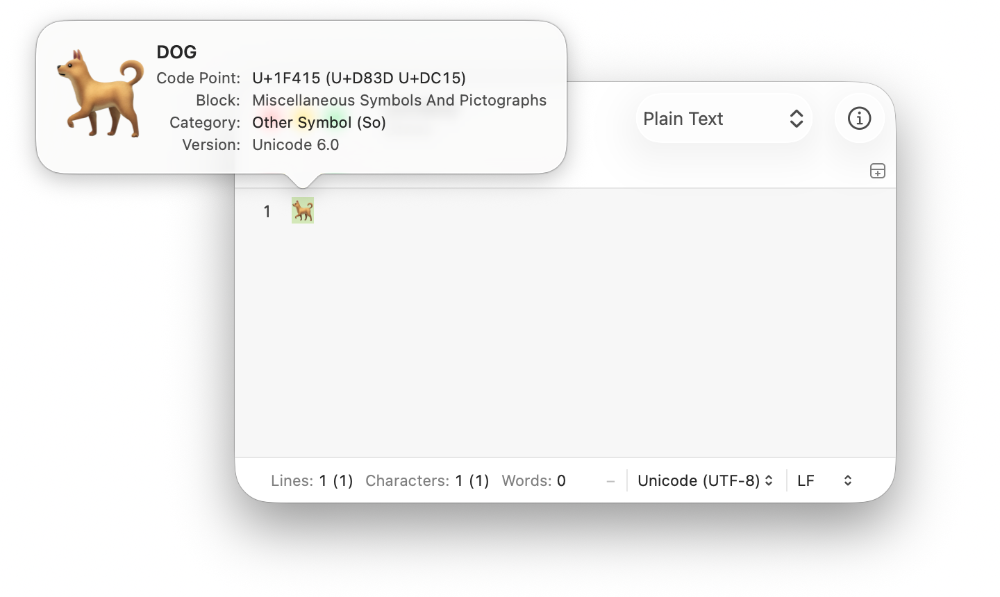

Get information about a character in CotEditor on Mac
CotEditor can inspect the Unicode information about the selected character.
The Character Inspector shows a zoomed view of the selected character, its Unicode code point, Unicode name, Unicode block name, Unicode category, and the Unicode version in which the character was introduced. If the selected character is actually composed of multiple Unicode characters, information for each constituent character appears.

Inspect a character
In the CotEditor app on your Mac, open a document.
Select exactly a single character.
Choose Text > Inspect Character.
Tip: Clicking on a block name in the inspector switches between the localized block name and the block name defined in Unicode.
 on your Mac, open a document.
on your Mac, open a document.